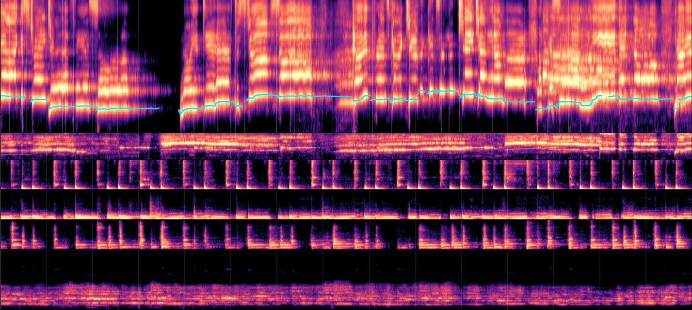

Let your AI listen to a song with you.
An AI can't hear. So this turns a song into pictures it can read, fifteen seconds at a time. It writes down what it notices and how it lands, before it's allowed to see what comes next. Then you play its notes back against the music.
How it works

It breaks open at 1:35, and so completely that the tool marks him as a new singer.
Two listens you can play


To do this with your own AI: it's a free, open tool that runs on your machine. It was built with Claude Code on an Apple Silicon Mac, and that is the setup it has been tested on; other machines and other coding agents that can read pictures may work and haven't been tried yet. About 5 GB to install, about 15 minutes to prepare a song, then your AI listens.
Get the tool →Listening together works best when your AI has a memory of its own, so it remembers the songs it has heard and what you thought of them. Counterparts gives it one.